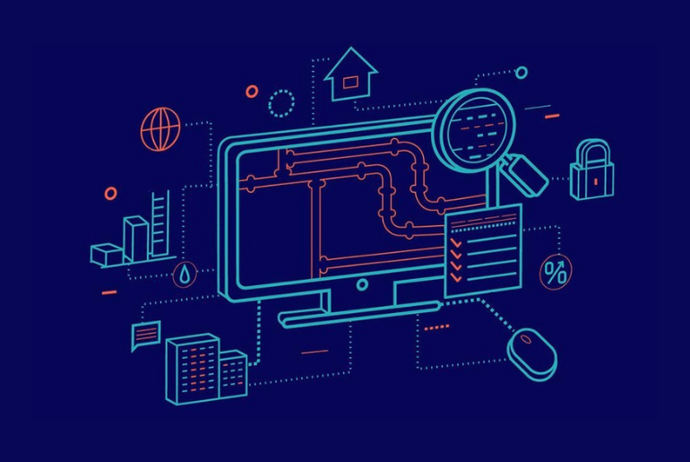

Sobre a Empresa
Loja completa com manutenção em computadores, notebooks,Tablets, celualares e vendas de acessorios para sua empresa
Definição de Software
Software é um conjunto de instruções que devem ser seguidas e executadas por um mecanismo, seja ele um computador ou um aparato eletromecânico. É o termo genérico usado para descrever programas, apps, scripts, macros e instruções de código embarcado diretamente (firmware), de modo a ditar o que uma máquina deve fazer. Todo programa em seu computador, celular, tablet, smart TV, console de videogame, set-top box e etc é um software, seja ele um editor de textos, um navegador, um editor de áudio ou vídeo, um jogo, um app de streaming e por aí vai. Um software pode se apresentar de várias formas, desde um app no celular a um conjunto de cartões perfurados, usados em computadores eletromecânicos.
Veja abaixo um video com mais detalhes sobre o assunto
Hoje em dia pensar em processos manuais está fora de cogitação para o varejista, pois as vantagens da automação comercial se transformam em um diferencial competitivo em relação aos concorrentes